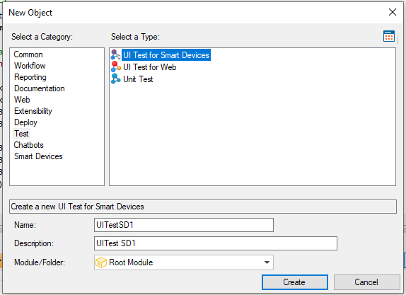

Represents a GeneXus Procedure object with the ability to control the device using methods of an External Object. Many user interface actions are available, including tapping on controls or typing in different controls to input values, checking text on panels and values in controls (variables/ attributes), etc. You can create a UI Test for Smart Devices object in the same way that you create any GeneXus object.  See AlsoIntroduction to UI Test for Smart Devices Automation
|